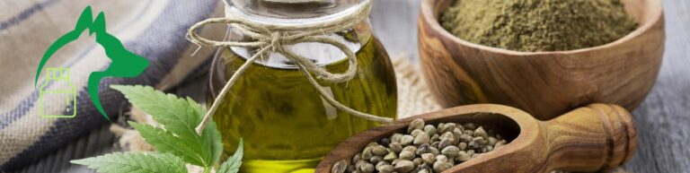
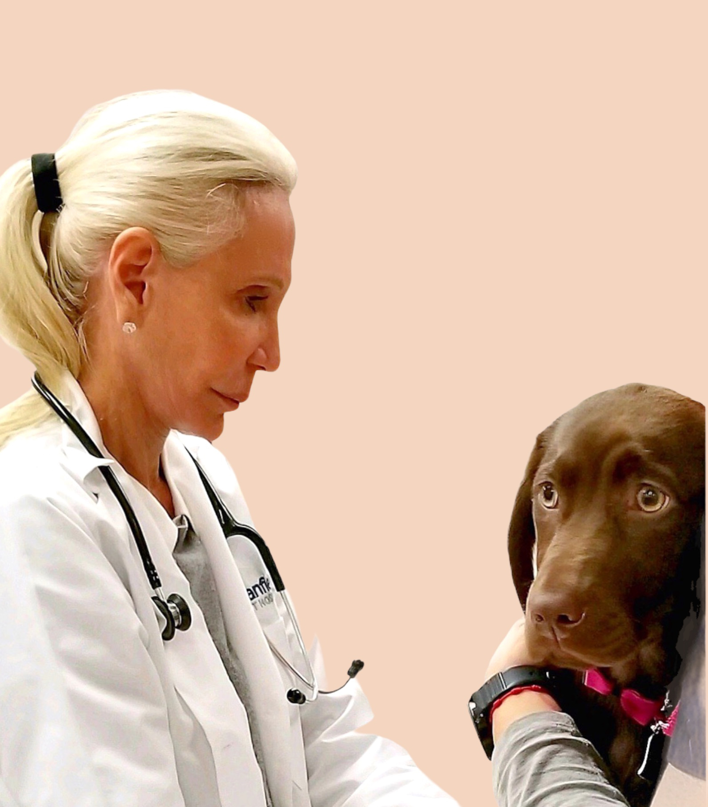

CBD products can help both people and dogs with a variety of medical and emotional issues. Your dog should have access to these useful treatments just like you do, and as their parent you should feel comfortable knowing they are safe and can actually help.
One U.S.- based CBD company, co-founded by a practicing veterinarian, believes that people science can and should be used to help our pets too. Their Hemp Paw Wax, Organic Healing Balm, and Hemp Bath Bombs use that science to pass the benefits on to dogs. Here’s why your pet could use CBD treatments and how Milltor’s Leaf specifically can put your dog and mind at ease.
There’s no doubt that scientific advancements are responsible for trends of increasing average human lifespans and improved overall health. Some animal lovers, rescuers, and doctors wonder why certain medical knowledge can’t also be applied to our dogs.
One example of this is CBD treatments. CBD ingredients that contain 0-1% THC (meaning they are non-psychoactive and they don’t get you “high”) are widely used in human medicine and have also proved beneficial in a variety of veterinary conditions.
Naturally, you might wonder how you can purchase an effective health product for your dog without a prescription. The fact is, for years doctors have been refining ingredients of products they use daily and offering these clinically proven products for general distribution.
Milltor’s Leaf was created with the belief that now our pets should enjoy the same opportunity. The company was co-founded by practicing veterinarian Dr. Lynda Tortoriello and Amy Mills with the basic concept that People Science is adaptable and beneficial to our animals.
You want the best possible for your dog, and you should be able to get it! Milltor’s leaf uses U.S.A sourced, premium, and human-grade ingredients in their products.
Milltor’s leaf also does not use ANY fillers or additives in their products. All of Milltor’s Leaf products are CBD isolate based, meaning they contain the purest form of Hemp oil extract.
When it comes to your pet and their health and well-being, it’s easy to be apprehensive about trying something new for them. Many pet parents worry about giving CBD to their dogs because they don’t know how it will affect them. More associate CBD products with start-up and tech culture and don’t trust that they’re actually helpful.
Co-founded by a veterinarian, Milltor’s Leaf is more than another CBD start-up. Since their products were created solely for pets by an actual practicing veterinarian, you can trust that they are informed, practical, and effective. Milltor’s Leaf products are also third-party lab tested with certificates of analysis for proof, adding that extra layer of comfort and security for consumers.
Lynda Tortoriello, a practicing Veterinarian in the New York metropolitan area for over 30 years, has experienced first-hand the positive effects CBD products have exhibited in her daily practice. By incorporating hemp extract into simple proven medical treatments, Dr. Tortoriello has personally seen positive outcomes in her patients.
Dr. Tortoriello originally studied veterinary medicine at the University of Parma in Parma, Italy. She later completed clinical rotations at The Animal Medical Center in Manhattan, owned and operated a large General and Specialty practice for 15 years in New Jersey, and practiced in Manhattan/the Upper East Side for 8 years. In other words, you can trust her expertise.
Milltor’s Leaf has several great and effective CBD products:
All of Milltor’s Leaf products contain less than 0.3% THC. This amount minimizes any psychedelic properties while maintaining its beneficial effects.
Products should be used as directed. Please consult with a veterinarian if your pet has a serious medical condition or is on any prescription medication.Remember, the information in this post is meant to inform, but not intended to be a substitute for veterinary advice. The Food and Drug Administration has not evaluated these statements.